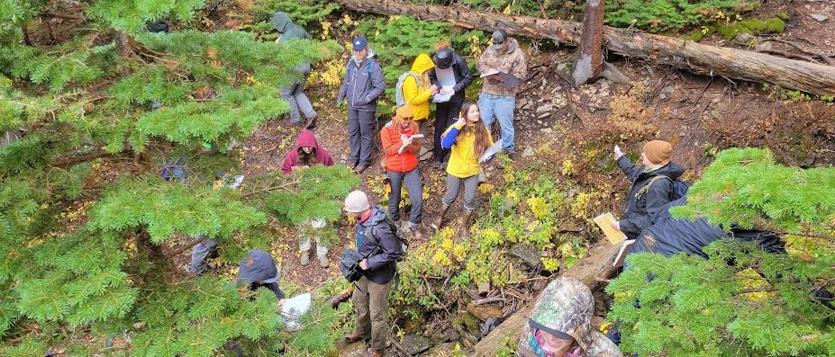
Teaching & mentorship
In my teaching of ecology, I strive to prepare a new generation of land managers, scientists, conservationists, public policymakers, and stewards. I believe in creating a dynamic learning environment that responds to student needs and interests while providing them with strong foundations for their studies. A data-driven approach is central to my teaching philosophy, where courses evolve based on student feedback, evaluations, and evidence-based pedagogy. I emphasize hands-on experiences, whether in the field, lab, or through computer-based exercises, to engage students and develop their analytical skills.
Throughout my teaching career I have mentored undergraduate students in career guidance, coding, statistics, and ecological theory. By incorporating these experiences into my approach, I aim to build an inclusive and interactive environment that fosters critical thinking, problem-solving, and a deeper understanding of ecology, equipping students to excel not only as ecologists but in hard skills like coding and GIS.
Experiential AI & Ecology
Mentored and instructed in a year-long interdisciplinary, project-driven course that brings together biologists and computer scientists to collaborate and answer questions in ecology, biology, and biodiversity science using computational machine learning (ML) approaches, bridging field ecology and emergent technologies.
Research Learning Experience
Organized and facilitated hands-on field and lab material for an introductory course welcoming incoming students to the Ecology and Environmental Science program.
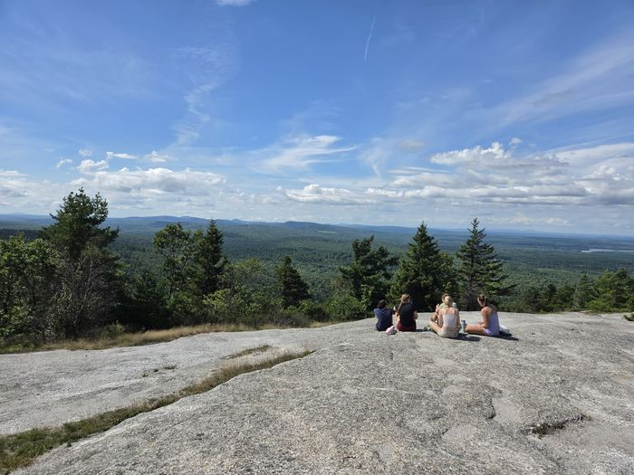
Field Problems in Environmental Science
A weekend fieldwork intensive in which students collect, analyze, and publicly present data. The course explores how development in Acadia National Park interacts with biodiversity, carbon storage, and the socio-economic impacts of tourism.
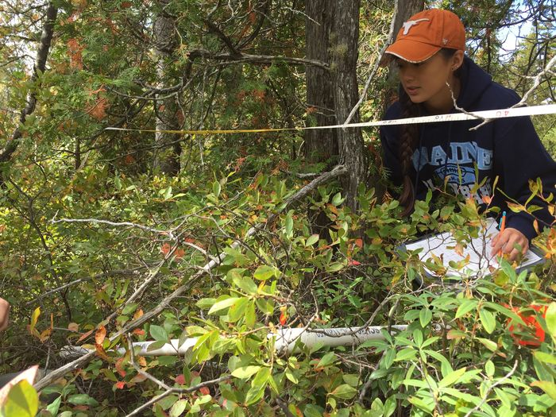
Rocky Mountain Vegetation
Contributed to iterative curriculum design and student engagement across three years in a lab and field setting. Topics ranged from lab-based vegetation identification to USFS habitat typing across multiple field trips and regional vegetation analysis.
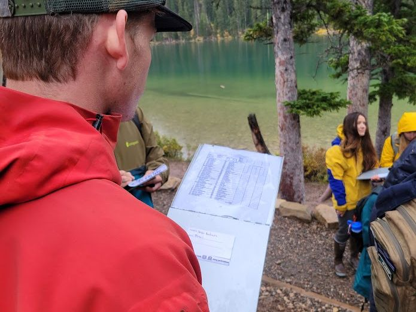
LiDAR Remote Sensing
A lecture and companion lab introducing the fundamentals of LiDAR, with in-depth discussion of data sources and spatial-temporal scale mismatch. The lab used Anaconda and Python batch scripts to download and process GEDI data, then brought it into R for visualization and comparison to fine-scale ALS data.
Alpine Ecology
Helped lead a weekend field course into the Beartooth Wilderness alpine zone, facilitating individual student-run research projects and contributing to a longitudinal plant-height dataset. Explored alpine geology, plant phenology, wildlife, and pollinators with a group of motivated undergraduates.
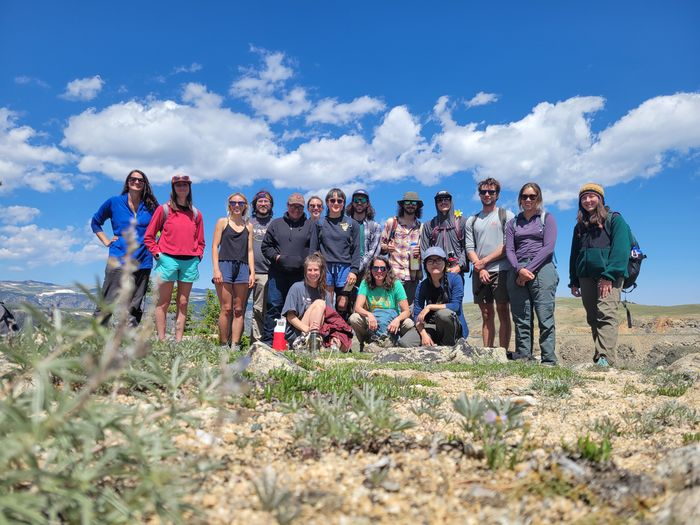
Landscape Ecology
Graduate-level technical instruction in applications of landscape ecology using GIS, including independently revamping lab material to transition the course from ArcMap to ArcGIS Pro.
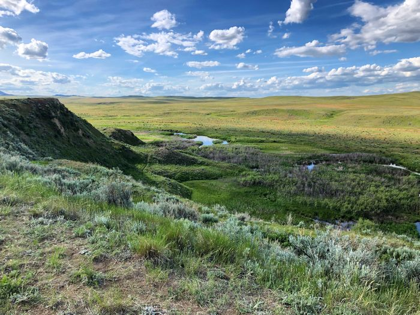
Biological Diversity of Life
Designed lectures for a hybrid-format class along with grading rubrics and assignments. Independently taught six lab sections (about 70 students), introducing non-majors to the scientific method from research proposal through final presentation of findings.
Mentorship
Cross-Institutional Research Mentor, NEON Beetle Imaging Project
Mentoring two ASU biology master's students, three University of Maine undergraduates, and one OSU computer science undergraduate in biodiversity imaging, AI workflow development, and ecological data integration, supporting interdisciplinary skill-building at the interface of ecology and computer vision.
Nathan Cain
Nathan works at the interface of ecology and computer vision, developing AI workflows and integrating ecological data. He built the AI processing workflow behind a publication and the beetle dataset, developed highly accurate keypoint estimation for our work on beetle body-size variation, and collaborates on experimental sparse autoencoders for a novel trait-quantification study (in prep).
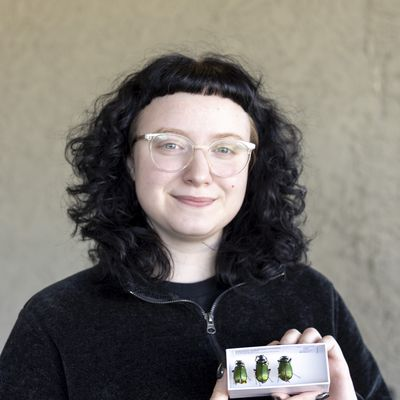
Leah Cotton
Leah imaged carabid beetles at the NEON Biorepository, learning to photograph specimens in a standardized way built for computer vision and to manage the data with robust metadata and controls for data leakage. She presented her findings on the status of the collection to NEON, with recommendations for collection management, and is a coauthor on one publication.
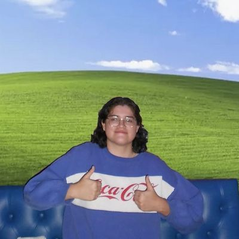
Jacqueline Dominguez
Jacqueline imaged carabid beetles at the NEON Biorepository, learning to photograph specimens in a standardized way built for computer vision and to manage the data with robust metadata and controls for data leakage. She is a coauthor on one publication.
Nicole McAdam
Nicole annotated beetle morphometrics and documented the methods, picking up the basics of the command line and Python along the way. She also helped establish a large red oak common garden experiment.
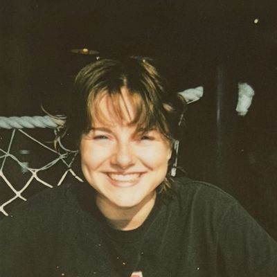
Kaitlyn Washburn
Kaitlyn annotates beetle morphometrics and documents the methods, with a first introduction to the command line and Python. She also helps maintain the large red oak common garden experiment.
Gaven Hollenbeck
Gaven annotates beetle morphometrics and documents the methods, with a first introduction to the command line and Python.
Undergraduate Research Mentor, Forest Remote Sensing
Mentoring undergraduate researchers on dissertation-related projects, with training in data analysis, scientific writing, and publication development.
Sarah McCullough
Sarah worked on GIS projects and tree crown annotation, and wrote a blog post reviewing the literature on tree crowns. She has since gone on to graduate school in Ottawa, Canada.
Aaron Loud
Aaron worked on GIS projects and tree crown annotation.
SEEDS Mentor, Ecological Society of America
Mentored students through ESA's SEEDS program at three annual meetings, supporting early-career ecologists from a range of backgrounds.
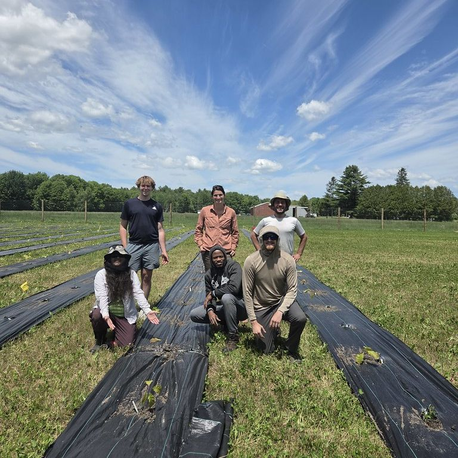
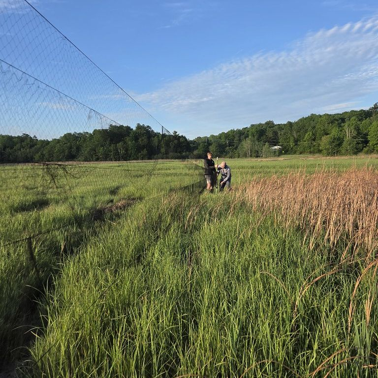
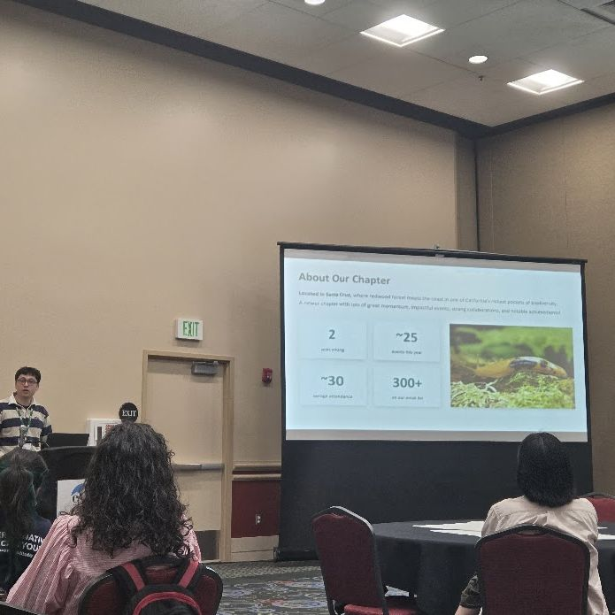
Gallery

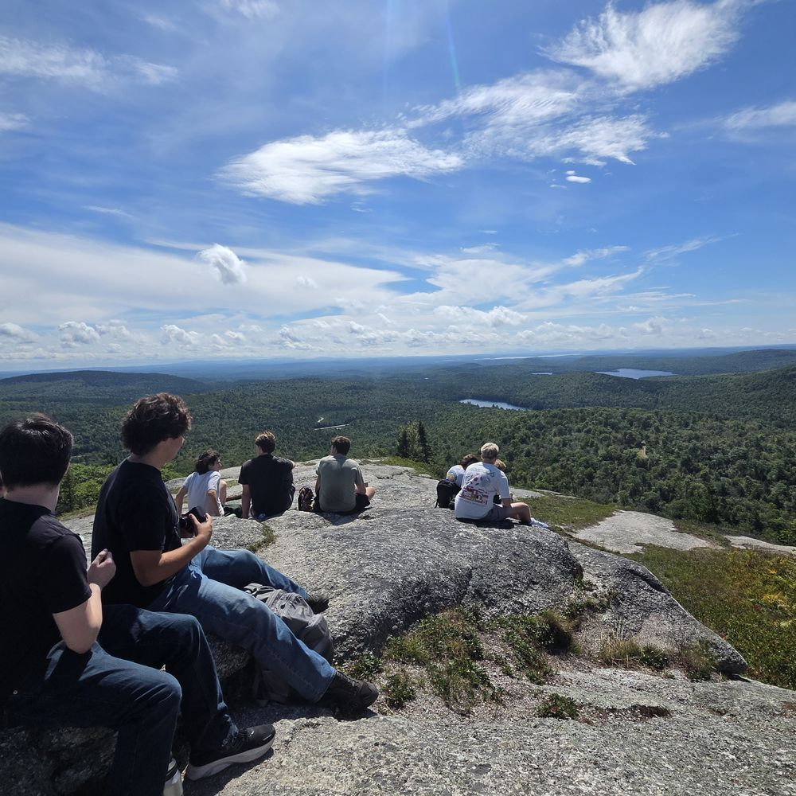
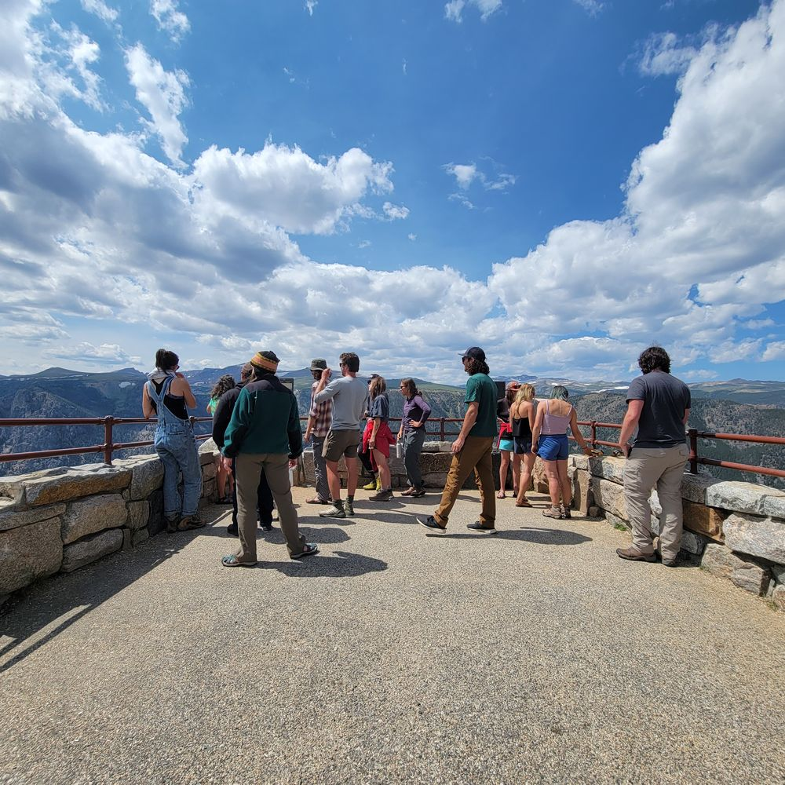